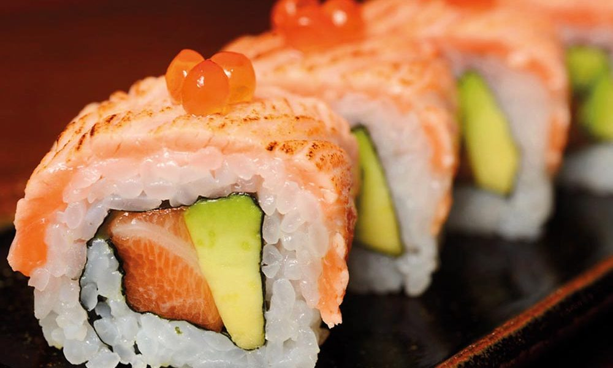

Smoked salmon sushi roll

How to make a Smoked salmon sushi roll
The smoked salmon sushi roll is one of the most delicious variants of this dish.
Became very popular in western countries as an american version of the original japanese dish.
This guide contains the Instructions on how to make the Smoked salmon sushi roll
and the ingredients needed.
Ingridients
- 2 cups Japanese sushi rice
- 6 tablespoons rice wine vinegar
- 6 sheets nori (dry seaweed)
- 2 tablespoons wasabi paste
- 8 ounces smoked salmon, cut into long strips
- 1 cucumber, peeled and sliced
- 1 avocado - peeled, pitted and sliced
Steps
- Soak rice for 4 hours.
Drain rice and cook in a rice cooker with 2 cups of water.
Rice must be slightly dry as vinegar will be added later
- Immediately after rice is cooked, mix in rice wine vinegar;
spread rice on a plate until completely cool
- Place 1 sheet of seaweed on a bamboo mat;
press a thin layer of cool rice on seaweed,
leaving at least a 1/2 inch top and bottom edge of the seaweed uncovered.
- Dot some wasabi on rice;
arrange smoked salmon, cucumber,
and avocado on rice about 1 inch away from the bottom edge of seaweed
- Slightly wet the top edge of seaweed;
roll up tightly from the bottom to the top edge with the help of the bamboo mat.
Cut salmon roll into 8 equal pieces and serve. Repeat for other rolls.
Home